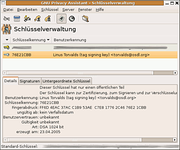
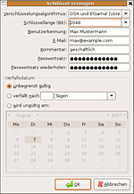
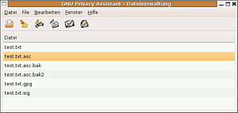

GPA
Dieser Artikel wurde für die folgenden Ubuntu-Versionen getestet:
Ubuntu 14.04 Trusty Tahr
Zum Verständnis dieses Artikels sind folgende Seiten hilfreich:
Der GNU Privacy Assistant  (GPA) ist eine sehr spartanische grafische Oberfläche (Frontend) für das Kryptografie-Programm GnuPG. Das Programm ist nicht für eine bestimmte Desktop-Umgebung ausgelegt und eignet sich deswegen auch besonders für den Einsatz auf leistungsschwachen Rechnern. Kenntnisse über die Funktionsweise der GnuPG-Verschlüsselung werden vorausgesetzt [4]. Die Lektüre des Artikels GnuPG, der die Kommandozeilenversion
(GPA) ist eine sehr spartanische grafische Oberfläche (Frontend) für das Kryptografie-Programm GnuPG. Das Programm ist nicht für eine bestimmte Desktop-Umgebung ausgelegt und eignet sich deswegen auch besonders für den Einsatz auf leistungsschwachen Rechnern. Kenntnisse über die Funktionsweise der GnuPG-Verschlüsselung werden vorausgesetzt [4]. Die Lektüre des Artikels GnuPG, der die Kommandozeilenversion gpg behandelt, kann auch nicht schaden, ist aber nicht unbedingt vonnöten.
Installation¶
Für Ubuntu 12.04 steht GPA nicht zur Verfügung (siehe 831133 ). Folgendes Paket muss installiert [1] werden:
gpa (universe, ab Ubuntu 12.10)
 mit apturl
mit apturl
Paketliste zum Kopieren:
sudo apt-get install gpa
sudo aptitude install gpa
Bedienung¶
Zum Start [2] den Befehl:
gpa --disable-x509
im Terminal [3] verwenden und ggf. den Eintrag im Anwendungsmenü anpassen. Ansonsten stürzt GPA beim Start ab ( für GPA unter Ubuntu 16.04 nicht mehr nötig )
Schlüsselverwaltung¶

Nach dem Start des Programms öffnet sich das Fenster "Schlüsselverwaltung" (siehe Abbildung). Unter den Menü-/Symbolleisten befindet sich eine Auflistung des eigenen Schlüsselbundes. Einzelne Schlüssel können per Mausklick angewählt werden, worauf im unteren Drittel des Fensters die genauen Daten dieses Schlüssels inklusive des "Fingerabdrucks" dargestellt werden. In der linken Spalte kann man erkennen, ob es sich um ein eigenes Schlüsselpaar oder einen einzelnen öffentlichen Schlüssel eines Kommunikationspartners handelt. Im unteren Teil des Fensters befinden sich in drei Reitern (Tabs) alle Informationen über den jeweils ausgewählten Schlüssel. Diese Darstellung ist weitaus übersichtlicher als beim Kommandozeilenwerkzeug gpg.
Durch Linksklick  auf die zweite Schaltfläche von rechts in der Werkzeugleiste kann man auch die Schlüsseltabelle durch zusätzliche Spalten erweitern, die die wichtigsten Schlüsseleigenschaften bzgl. Vertrauen und Gültigkeit enthalten.
auf die zweite Schaltfläche von rechts in der Werkzeugleiste kann man auch die Schlüsseltabelle durch zusätzliche Spalten erweitern, die die wichtigsten Schlüsseleigenschaften bzgl. Vertrauen und Gültigkeit enthalten.
Die Steuerung des GNU Privacy Assistant geschieht über das Programmmenü. Einige Funktionen sind aber auch in der Werkzeugleiste oder im Kontextmenü der einzelnen Schlüssel verfügbar.
Schlüssel-Menü¶
Im Menü "Schlüssel" befinden sich verschiedene Punkte zur Schlüsselverwaltung. Man kann u.a.
neue, eigene Schlüssel erzeugen
Schlüssel wieder aus dem Schlüsselbund löschen
öffentliche Schlüssel von Kommunikationspartnern importieren
den eigenen öffentlichen Schlüssel oder einen signierten Schlüssel von einem Kommunikationspartner exportieren und
die Vertrauensstufe, die man in den Besitzer setzt, festlegen
Je nachdem, ob es sich beim angewählten Schlüssel um den eigenen oder einen fremden handelt, kann man auch entweder die Passphrase und Gültigkeitsdauer ändern oder ihn signieren, um ihm bei anderen Leuten mehr Glaubwürdigkeit zu verleihen. Weitere Erläuterungen dazu im Artikel GnuPG/Web of Trust.
Server-Menü¶
Hier befinden sich Funktionen, um den eigenen öffentlichen Schlüssel auf einem Schlüsselserver zu veröffentlichen. GPA benutzt dazu die GnuPG-Plugins gpgkeys_ldap und gpgkeys_hkp und nicht das Programm gpg. Leider muss dazu GnuPG von Hand mit den entsprechenden Flags kompiliert werden, damit man diese Plugins besitzt. Alternativ kann man auch einfach das Kommandozeilenprogramm gpg benutzen.
Einstellungen¶
Über den Menüpunkt "Bearbeiten -> Einstellungen" gelangt man in den Einstellungsdialog. Hier kann man den eigenen Standardschlüssel festlegen und einen Keyserver auswählen. Leider lässt sich nur einer von drei Keyservern auswählen, mit denen es anscheinend ständig Probleme gibt. Wie oben schon angemerkt, ist man deswegen zur Interaktion mit Keyservern vielleicht gezwungen, auf die Kommandozeile auszuweichen.
Außerdem kann man noch die Option "Einstellungen für Fortgeschrittene" anwählen, was aber keine großen Auswirkungen hat.

Neue Schlüssel¶
Im "Schlüssel"-Menü befindet sich der Menüpunkt "Neuer Schlüssel", mit dem man sich einen eigenen GnuPG-Schlüssel erstellen kann. Es öffnet sich ein Dialog, in dem verschiedene Angaben abgefragt werden (siehe Abbildung).
Als "Benutzerkennung" sollte man seinen eigenen Namen eintragen. Die E-Mail-Adresse sollte natürlich auch korrekt sein und als "Kommentar" kann man eigentlich eintragen, was man will, z.B. den Namen des Projekts, für den man diesen Schlüssel verwendet, einen Spitznamen oder einfach nur eine Beschreibung wie "geschäftlich" oder "privat". Man kann das Feld auch komplett leer lassen.
Bei der Wahl des Passwortsatzes sollte man sich einigermaßen Mühe geben, eine nicht zu kurze und nicht zu erratende Buchstaben- und Zeichenfolge zu wählen, damit der private Schlüssel auch gut geschützt ist. Den Algorithmus sollte man auf der Voreinstellung belassen und die Schlüssellänge kann man auf 2048 Bit erhöhen.
Dateiverwaltung¶
 Neben der Schlüsselverwaltung bietet GPA noch eine Dateiverwaltung, mit deren Hilfe man Dateien ver- oder entschlüsseln, signieren oder prüfen kann. Wer GnuPG nur für E-Mails verwenden möchte, benötigt diese Funktionen aber nicht, da sie in die gängigen E-Mail-Programme bereits integriert sind. Wenn man GPA mit Dateinamen als Kommandozeilenargumenten aufruft, wird direkt dieses Fenster geöffnet und die Dateien geladen, was man z.B. dafür verwenden kann, GPA als Standardanwendung für GnuPG-verschlüsselte Dateien zu definieren.
Leider beinhaltet GPA keinen Texteditor oder Dateibetrachter und auch keine Möglichkeit, externe Programme für diese Zwecke aufzurufen. Man kann also verschlüsselte Dateien nicht direkt betrachten, sondern muss sie in eine neue Datei entschlüsseln und diese dann auf andere Art und Weise öffnen.
Die Schaltflächen der Werkzeugleiste (und die entsprechenden Menüpunkte) haben die folgenden Bedeutungen:
"Datei öffnen" - bedeutet eigentlich nur, dass die entsprechende Datei in die Liste aufgenommen wird. Es findet noch keine echte Dateioperation statt.
"Dateiliste löschen"
"Datei signieren" - im Allgemeinen möchte man hier die Optionen Signatur in separater Datei und ASCII-Verpackung wählen, um z.B. ein Downloadpaket auf der eigenen Webseite mit einer Signaturdatei zu versehen.
"Signatur prüfen"
"Datei verschlüsseln" - man muss noch den öffentlichen Schlüssel wählen, mit dem man die Datei verschlüsseln will. Außerdem kann man die Datei gleichzeitig signieren. Meistens empfiehlt sich wiederum die Option ASCII-Verpackung, außer bei großen Binärdateien.
"Datei entschlüsseln" - die Datei wird entschlüsselt und das Ergebnis in einer Datei gleichen Namens abzüglich der Endung .asc bzw. .gpg gespeichert. Existiert diese schon, wird sie nach Rückfrage überschrieben.
 Übersichtsartikel
Übersichtsartikel- Erstellt mit Inyoka
-
 2004 – 2017 ubuntuusers.de • Einige Rechte vorbehalten
2004 – 2017 ubuntuusers.de • Einige Rechte vorbehalten
Lizenz • Kontakt • Datenschutz • Impressum • Serverstatus -
Serverhousing gespendet von